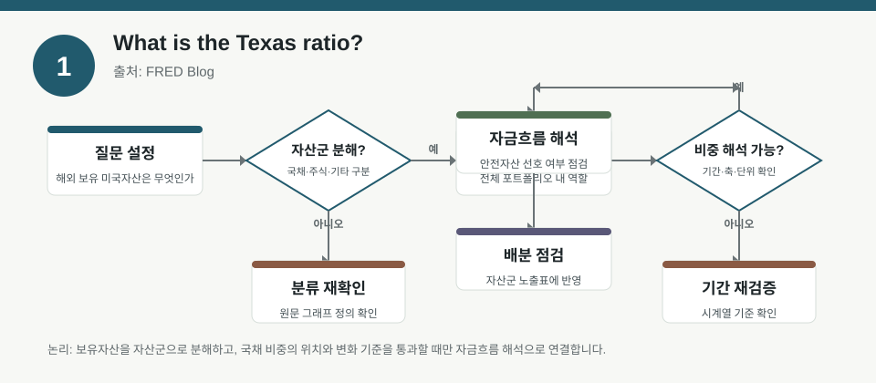
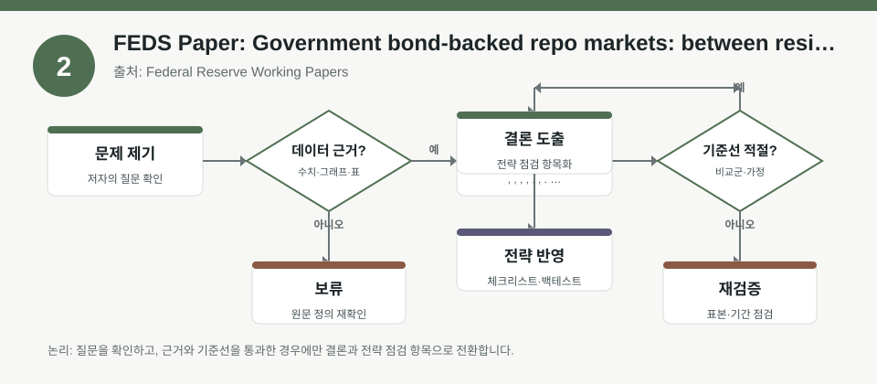
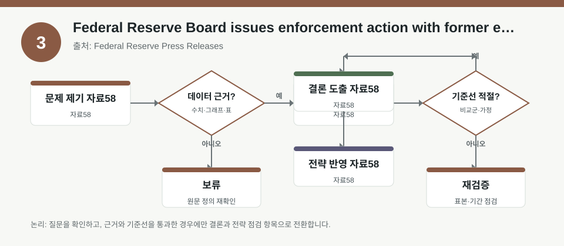

핵심 요약
- 결론: 이번 자료들은 은행 건전성, 레포 시장의 유동성·취약성, 그리고 규제 집행 리스크를 함께 보며 KOSPI/KOSDAQ의 금융주·크레딧 민감도를 점검하는 관점이 핵심입니다.
- 원칙: 수치와 영향 방향은 원문 메타데이터만으로 확정하지 말고, 자본건전성 지표·담보자산 구조·규제 이벤트를 교차 확인해야 합니다.
주목할 자료
| 번호 | 자료 | 출처 | 원문 | 핵심 내용 | 데이터 포인트 | 리스크/한계 |
|---|---|---|---|---|---|---|
| 1 | What is the Texas ratio? | FRED Blog | 원문 보기 | 은행 부실 가능성을 가늠하는 건전성 지표를 설명하는 자료로, 자산건전성·부실여신·자본완충을 함께 보는 관점을 제공합니다. | 텍사스 비율, 부실자산 대비 자기자본, 은행 건전성 민감도 | 메타데이터만으로 계산식·임계치·표본을 확정할 수 없어 원문 정의와 최신 수치를 반드시 확인해야 합니다. |
| 2 | FEDS Paper: Government bond-backed repo markets: between resilience and vulnerability | Federal Reserve Working Papers | 원문 보기 | 정부채 담보 레포시장의 안정성과 취약성이 같은 구조적 특징에서 동시에 나타날 수 있음을 정리한 문헌고찰 자료입니다. | 담보 유동성, 증거금·헤어컷, 롤오버 리스크, 시장조성 구조 | 논문이 문헌을 종합한 자료이므로 특정 시기·국가의 실증계수는 원문에서 별도 확인이 필요합니다. |
| 3 | Federal Reserve Board issues enforcement action with former employee of Regions Bank | Federal Reserve Press Releases | 원문 보기 | 전직 은행 직원 대상 집행 조치 사례로, 내부통제·준법·평판 리스크가 금융회사와 관련 투자대상의 재평가 요인이 될 수 있음을 시사합니다. | 규제 집행 이벤트, 내부통제 리스크, 평판 리스크, 컴플라이언스 비용 | 개별 사건 공지이므로 시장 전체 영향으로 일반화하면 안 되며, 사건 범위와 법적 효력을 확인해야 합니다. |
자료별 상세
1. What is the Texas ratio?

- 핵심: 은행의 부실자산 부담과 자본완충을 함께 보게 해 주는 건전성 체크 지표라는 점이 포인트입니다.
- 데이터 포인트: 부실자산과 자본의 상대적 비중을 보는 지표이므로, 한국에서는 은행주·저축은행·여전채 민감도 점검 항목으로 연결할 수 있습니다.
- 리스크: 비율의 정확한 정의, 포함 자산 범위, 경고 신호로 쓰는 임계값은 원문에서 확인해야 합니다.
- 투자전략 반영 예시: KOSPI 금융섹터와 KOSDAQ 제약이 아닌 금융성 업종을 볼 때, 부실채권, 대손충당금, 자본비율, 조달금리의 동시 점검 항목으로 넣는 방식이 적절합니다.
- 실행 예시: 분기 실적 확인표에 “부실자산/자기자본/충당금/조달비용/규제자본” 5개 칸을 두고 전기 대비 변화만 기록합니다.
2. FEDS Paper: Government bond-backed repo markets: between resilience and vulnerability

- 핵심: 유동성이 좋아 보이는 국채담보 레포도 레버리지·마진·담보집중이 커지면 취약성이 동시에 커질 수 있다는 구조적 관점을 제공합니다.
- 데이터 포인트: 헤어컷, 담보 회전율, 롤오버 의존도, 국채시장 변동성이 포트폴리오 유동성 리스크와 연결됩니다.
- 리스크: 문헌고찰 자료라서 특정 국가의 레포 스프레드나 스트레스 구간 수치는 원문에서 따로 검증해야 합니다.
- 투자전략 반영 예시: 한국 투자자는 KOSPI 대형주와 금융주, 채권ETF, 환헤지 비중을 함께 볼 때 단기 조달 경색과 금리 급변 가능성을 체크리스트에 포함할 수 있습니다.
- 실행 예시: 포트폴리오 점검표에 “담보자산 집중도, 현금비중, 만기분산, 환노출, 급변 시 거래정지 대체안” 항목을 넣고 월 1회 재점검합니다.
3. Federal Reserve Board issues enforcement action with former employee of Regions Bank

- 핵심: 개별 제재 공지는 단일 사건처럼 보여도 금융주·지역은행·연관 거래상대의 규제 리스크 인식에 영향을 줄 수 있다는 점을 보여줍니다.
- 데이터 포인트: 규제 집행 이벤트 자체, 내부통제 실패 가능성, 평판 훼손 위험, 후속 조사 가능성을 확인해야 합니다.
- 리스크: 전직 직원 대상 조치이므로 기관 전체의 재무상태나 사업모델을 직접 의미하지 않을 수 있습니다.
- 투자전략 반영 예시: 한국 투자자는 은행·증권·카드 업종을 볼 때 규제 공시, 내부통제 이슈, 제재 이력, 감사의견 변화를 함께 보는 점검표를 둘 수 있습니다.
- 실행 예시: 보유 종목 메모에 “규제 공시 여부, 내부통제 관련 공시, 소송·제재 진행상태, 평판 이슈”를 사건 발생일 기준으로 기록합니다.
팩터·리스크·포트폴리오 관점
- 핵심: 세 자료를 합치면 금융섹터에서는 가치나 배당 같은 팩터보다도 자본건전성, 유동성, 규제민감도가 먼저 흔들리는 구간을 구분하는 것이 중요합니다.
- 검수: 텍사스 비율의 임계치, 레포시장 취약성의 정량 변수, 제재 사건의 범위는 원문과 후속 공시로 확인해야 합니다.
정리
- 결론: 이번 묶음은 한국 투자자에게 금융주·크레딧·유동성 리스크를 같은 프레임으로 점검하라는 신호에 가깝습니다.
- 다음 확인: 원문에서 지표 정의, 표본기간, 법적 효력, 그리고 정량 수치를 확인한 뒤 사내/개인 체크리스트에 반영해야 합니다.